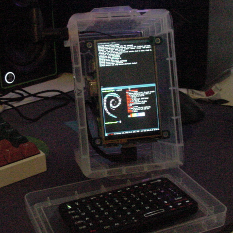
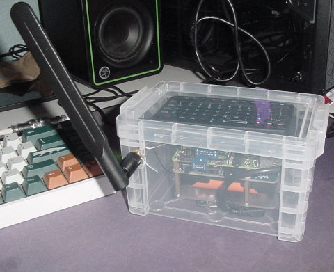
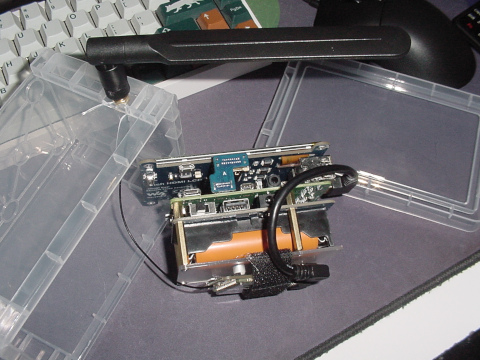
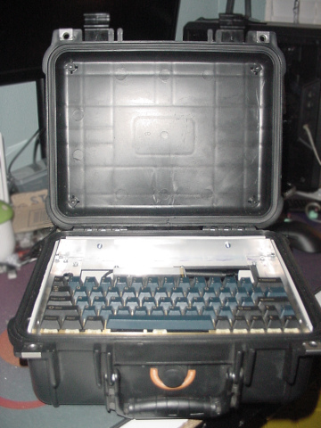
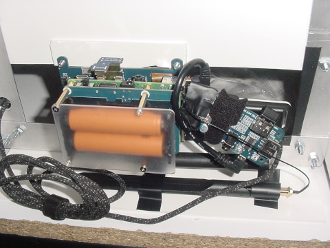
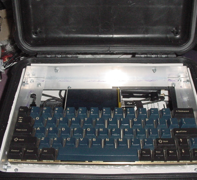

hi
this is aspen's site
About Me
- embedded electronics tinkererer -->
- born to break shit, forced to wipe firmware 30 trillion times
- amateur amateur ism band enthusiast(hmu on meshtastic)
- open source user
- 80s music fan -->
- i dabble in photography -->
- anarchist communist -->
Contact
Visitors

buddies =)


etc cool stuff


feel free to add mine :3
yap
im not making seperate pages for everything
my shitty electronics projects
im making a phone i guess
its just a rpi 4b with a lte module strapped on. with a weird display that im set to replace.

(and if your wondering where i get such amazing photos, its none less than the incredible sony mavica)
most of the work is in debugging and the like. and also reading the AT command manual. the lte module itself was designed to work as a hat for the rpi zero but that just had strange issues that led me to just use a more powerful sbc
as of now i finally have a case and working ish software for everything. runs raspberry pi os lite with then i3 on top. new touchscreen as well.
and everything fits in this neat little case originally meant for index cards. its cheap and temporary but you know what they say about temporary solutions. perhaps i 3d print a complete case or make this a component in a broader radio cyberdeck i never finished building. this would look cool in a pelican case methinks.
heres a better shot of the careful arangement of all the hats or shields whatever you wanna call it. waveshare made basically everything but the pi ofc. since the battery(ups hat) came with no cells i salvaged them from a drill battery.
the pelican case?
so its in a pelican case now. and the software/hardware stack has changed a bit aswell. more batteries to be added still. keyboard is based on the dz60rgb with via and rgb yeeted and replaced with a basic qmk build. even with all this, it draws about 8w(maybe if my battery script is right) at idle with all the radios doing thier thing. not too much i guess but still enough to generate a good amount of heat and burn through the 2 18650s on the ups hat.
lots of empty room in the case below the keyboard. plan is to add standard usb-pd powerbanks, with a trigger board to 9v or 12v, and a buck down to the 8.4v the ups hat expects from the barrel jack. idk if all that will work but ill sure try. anything to not deal with (non usb)ac adapters
so the original goal with the software, since i didnt want to try miniaturizing, was to allow basically thin clients to connect over wifi or something
so i did that. i know onboard wifi has ap mode but i wanted to use a dongle i had lying around to leave the onboard for uplink only. i still have no thin clients besides a basic website.
so as it stands, the cyberphonedeck thing is now a glorified router/ap with lte failover that can also make and recieve calls/sms i guess. for more fun i even have wireguard connected to my vps always running just cause. and i dont like isps. and maybe some ttl mangling to maybe avoid hotspot detection.
im not really sure the direction i want to turn this. i could get a bigger screen and make this a laptop style cyberdeck, or perhaps run a little storage server, and make this the perfect battery-powered (away-from)-home lab. if its not clear i plan nothing ahead and just go with wherever the wind takes me. but a esp32 thin client is probably a bigger priority.
the software ?
not much to talk about as its such a hack job I hardly understand what ive done to get things working. for networking i have networkmanager for wifi uplink, modemmanager for lte uplink, and hostapd with dnsmasq for the AP side.
the phone software is centered around a daemon that manages all the modem stuff internally and exposes a http api, as well as a a library of the same functions for if i wanted to make a different shim later on. not that i use that, my tui phone program i have for testing still uses the api. audio only works on the website one however cause it needs the browser or something. oh and all my daemon and client code is written in golang cause its what i know and can maintain i guess.
other stuff
and annoying tangent. maybe im just dumb at modems. but the documentation for the hat only mentions using the onboard audio jack for phone calls. but turns out you can just send the raw pcm over serial and it works great. only mention of this is a random pdf linked at the bottom of the wiki called SIM7600 Series_USB AUDIO_Application Note truly does work like a charm. with my server-client approach to a phone i just forward the pcm over http to my website client. i doubt using linux audio(alsa) would add much latency but why use it if the 'server' never outputs the audio itself. but dont listen to me im no software enjenir.
also if for some reason you read all this and thought "why not just use modemmanager?". well i wanted to learn about AT commands and stuff i thought it'd be neat. plus concurrency stuff with handling URC's(Unsolicited Result Code). also i do use modemmanager just only for LTE cause no way im going to deal with tcp over AT commands. also modemmanager doesnt support MMS as far as i can find on the internet.
also also the keyboard flashing is never documented properly anywhere i could find on the internet. as this rev 2.1 of the dz60rgb has to be flashed via this wacky mass storage bs. but you cant just copy over the bin you have to use dd like so
sudo dd if=.build/dztech_dz60rgb_v2_1_[whatever].bin \
of=/run/media/$USER/KBDFANS/FLASH.BIN \
bs=512 conv=notrunc oflag=direct,sync status=progress
sync
otherwise everything explodes and you have to reset the keyboard. which you can do by pressing the weird button on the
back close to the spacebar switch, or if you actually read the documentation(for which i am incapable) you can just hold esc
while you plug in the keyboard. otherwise everything in qmk works like a charm. to do the disabling of rgb i mentioned before
you just make a rules.mk that contains RGB_MATRIX_ENABLE = no in your keymap folder, and compile ur keymap like normal:
qmk compile -kb dztech/dz60rgb/v2_1 -km [whatever]
assuming ofc you have the keymap and a clean build of qmk. as if you attempt to download directly from the online configurator the builds
will mysteriously fail. so just use the configurator to get the keymap json, and use the fresh
clean qmk to convert it to the keymap.c
qmk json2c ~/[random bs name that it downloads].json \
> keyboards/dztech/dz60rgb/v2_1/keymaps/[whatever]/keymap.c
i should mention that this is only for this revision, the official docs might be right for the others. but its guidance
for this one is just plain wrong, or maybe linux handles things wrong. or i dont know anything
music
i do condone music piracy and is my favorite way to do it
i like the diy nature of punk and battle jackets of metal but mostly listen to post-punk at the moment. so heres my jacket/vest


color rendering on the camera is bleh but all the embroidery thread used to attach it are fun colors
i used to just listen to generic 80s pop but after getting into the more 'alternative' acts i can hardly go back. i also listen to lots of other music from other eras but yapping about smooth jazz or dnb isnt fun
photography
as mentioned before, my current and only camera right now is the wonderful sony mavica. it takes quite nice photos if you dont shoot onto floppy disks and instead use sony's proprietary memory stick
here it is taking its selfie

and here are my dogs

an unscaled image to show this cameras true prowess

assorted pictures from around town, taken on my old film camera


anarchist communism
idk i just think the state is cringe, and only used to enforce the existing intertwined power and capital. but im no writer so if you want you can read some of the following works from one russian geographer "Peter Kropotkin":
ofc there are newer writings from other thinkers that arent from the 1800s but these are still a good place to start. not to mention rather timeless.
thank you for visiting my site
post script
if you would really like to just see my old site that had css then here u go
also im not going to use spell check im writting this html by hand in a text editor